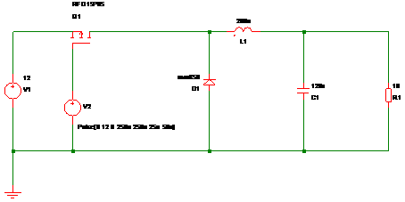

Step Down (BUCK) Converter

Figure 1 - Schematic
Target Parameters
- Input voltage = 12V DC
- Output voltage = 6V DC
- Output Current = 1.5A
- Output Voltage ripple = 40 mV pk/pk
- Switching Frequency = 20 kHz
Calculations
1) Time Period
Where T = ime Period, f = switching frequency
2) On Time
The time period where the MOSFET is switched on for.
Where t1 = Q1 on time, T is time period, Vo is output voltage, Vin is input voltage
3) Inductor Ripple Current
Aim to limit the inductor ripple current to 50% of the load current
Where DIL is Inductor ripple current, IO is output current
4) Inductance
Where L = inductance, t1 = Q1 on time, Vin = input voltage, Vo = output voltage, DIL is Inductor ripple current
5) Output Capacitance
Where C = capacitance, T = time period, L = inductance, DV = voltage
ripple, Vo = output voltage, Vin = input voltage
Rounding C to a preferred value gives 120uF
Simulations
Using the free version of Simetrix, the circuit in Figure 1
the basic circuit was simulated.
Parameters:
- V1 = voltage source to provide the input voltage
- V2 = Pulse source giving a 20kHz square wave, 12v peak to peak, initial vale set to 12v, 50% duty cycle
- Q1 = Any suitable P-channel MOSFET should suffice, I used an RFD15P05
- D1 = For best results, uses a ultra fast recovery diode, I used an MUR850
- RL = Load resistor to give full load current
Load Resistance:
Top Of Page
{Updated: 20th June 2008